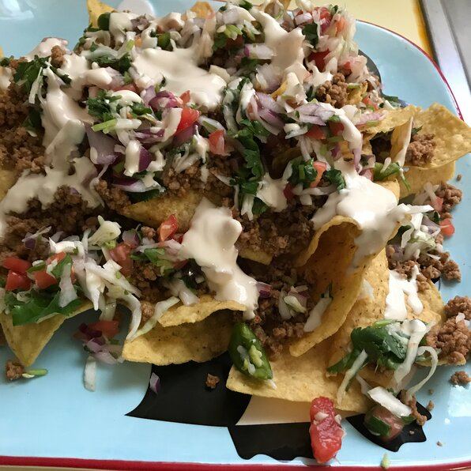

Nachos

Description
This combination of mouth-watering nacho goodness will leave you
lying on the floor in disbelief at how glorious it is. You might
physically shake a little. It's normal.
Ingredients
- 1 pound of ground beef
- 1 package of taco seasoning mix
- 3/4 cup of water
- 1 (18 ounce) package of restaurant style tortilla chips
- 1 cup shredded sharp Cheddar cheese, or more to taste
- 1 (15.5 ounce) can refriend beans
- 1 cup salsa
- 1 cup sour cream, or more to taste
- 1 (10 ounce) can pitted black olives, drained and chopped
- 4 green onions, diced
- 1 (4 ounce) can sliced jalapeno peppers, drained
Steps
- Cook and stir ground beef in a skillet over medium heat
until meat is crumbly and no longer pink, appr 5-10 min.
Drain excess grease. Stir in taco seasoning mix and water
and simmer until beef mixture has thickened, 8 to 10 mins.
-
Set the over rack about 6 inches from the heat source and
preheat boiler. Line a baking sheet with aluminum foil.
-
Spread tortilla chips on the prepared baking sheet, top with
Cheddar cheese and dot with refried beans and ground beef mix.
-
Broil in the preheated oven until cheese is melted, watching carefully
to prevent burning, 3-5 mins
-
Top nachos with salsa, sour cream, black olives, green onions and jalapeno peppers